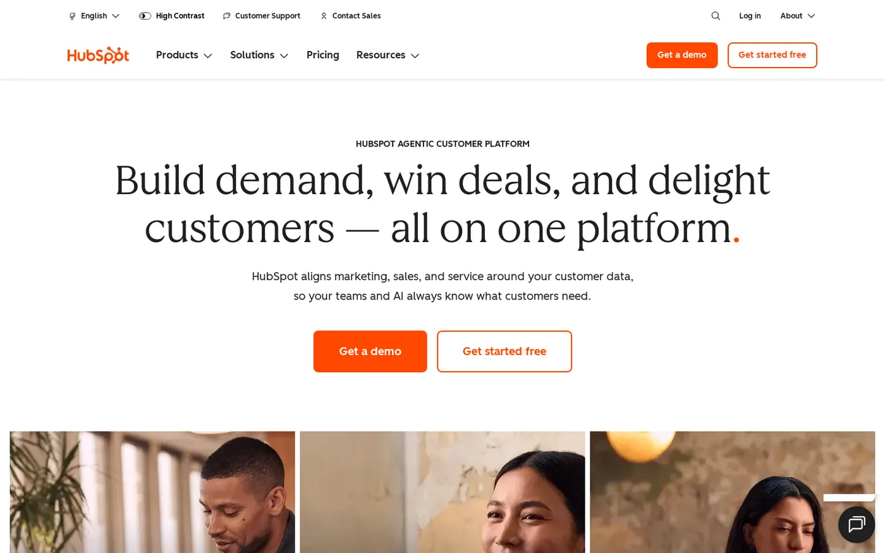
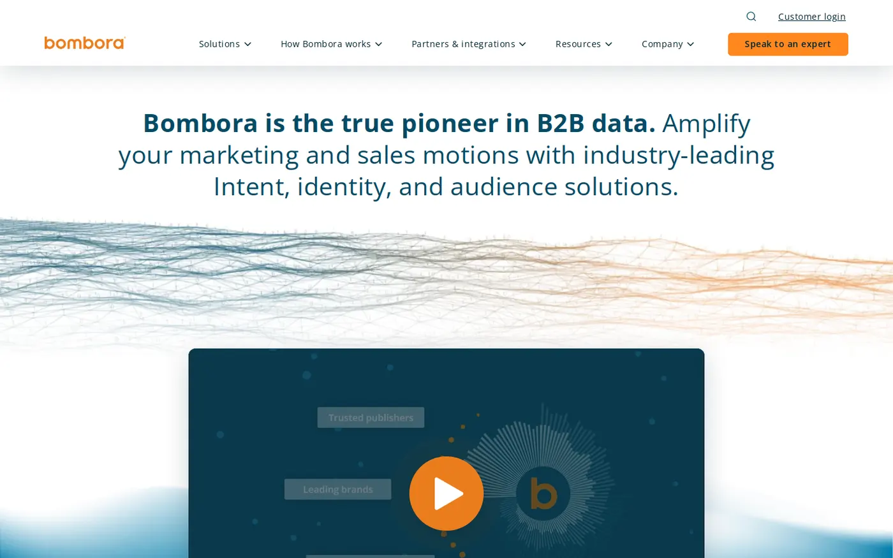
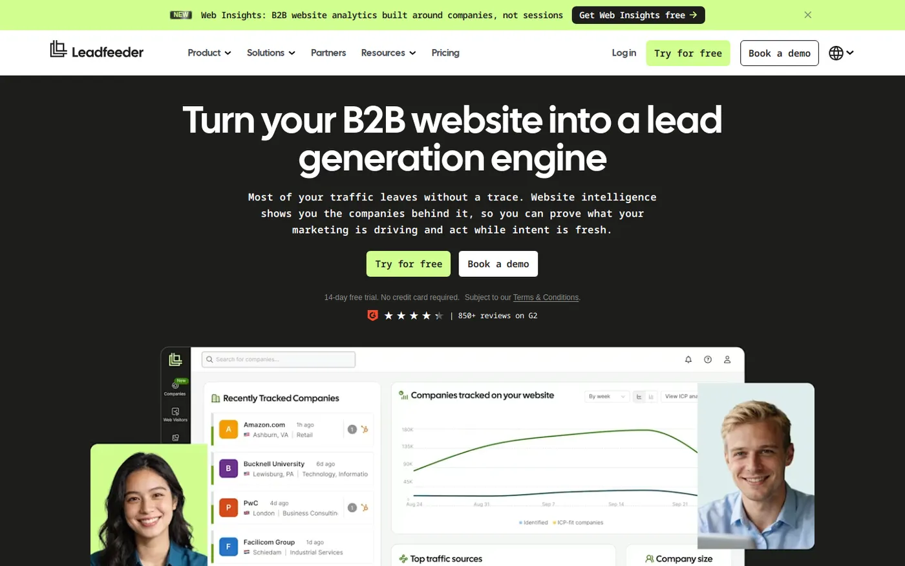
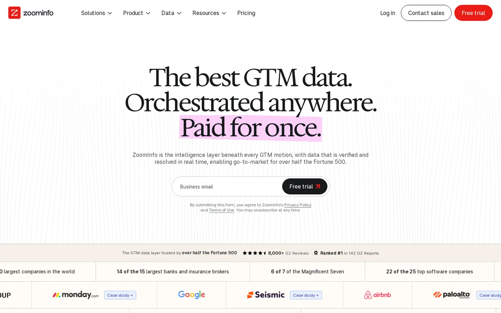

On this page
- What intent data is
- At a glance
- 1. Start from your ICP
- 2. Pick precise topics
- 3. First-party intent first
- 4. Add third-party intent
- 5. Score and stage accounts
- 6. Find the buying committee
- 7. Route signals fast
- 8. Match the message
- 9. Consent and privacy
- 10. Measure against a holdout
- What it costs
- Mistakes to avoid
- FAQs
- Sources
B2B intent data shows which companies are researching a problem or a product right now, based on what their people read on your site and across the web. The best practices come down to one rule: use it to choose who to contact first, not as proof that anyone wants to buy. In practice, that means a named account list, a few precise topics, your own site's signals first and a fast handoff to sales.
Below are 10 practices for SaaS teams, in the order you would set them up, with the tools that support each step.
I work at Fourward, which publishes this guide. No vendor paid to be included or knew I was writing this. We checked each tool fact on that company's own site on 11 November 2026. I did not create accounts or run tests, so nothing here claims hands-on results.
- B2B intent data is information that shows which companies are researching a topic or product right now. It comes from your own site, from other sites and from review sites such as G2.
- Intent data shows interest, not a decision. Bombora, for example, flags a company when its last three weeks of research rise above its 12-week baseline.
- Start with first-party signals. A visit to your pricing page says more about you than a spike in a general topic.
- The value comes after the signal: an owner, a fast follow-up and a message about the buyer's problem. Measure the result against accounts that got no special treatment.
What B2B intent data is, and the three kinds
Intent data is a record of research behaviour, grouped by company. One person reading one article means little. Several people at the same company reading about the same subject, more than they usually do, is worth a closer look.
The data comes from three places. Each one answers a different question.
| Kind | Where it comes from | What it tells you | Main limit | Tools in this guide |
|---|---|---|---|---|
| First-party | Visits to your own site, docs and emails | Which companies are looking at you | Only sees buyers who already found you | HubSpot buyer intent, Leadfeeder |
| Third-party | Reading on other companies' sites | Which companies are researching a topic more than usual | Shows interest in a subject, not in you | Bombora, ZoomInfo, 6sense |
| Review-site | Activity on a review site such as G2 | Which companies view your profile on that site | Only covers buyers who use that site | G2 Buyer Intent |
Most tools turn these signals into a score or a stage for each account. The practices below show how to use that score without being fooled by it.
Intent data tells you which accounts to look at first. It does not tell you who will buy.
The 10 intent data practices at a glance
The same three questions for every practice: what to do, why it matters and which tools help.
| Practice | Why it matters | Tools that help |
|---|---|---|
| 1. Start from your ICP and an account list | Keeps signals on accounts you can sell to | Your CRM, such as HubSpot |
| 2. Pick a few precise topics | Broad topics flag the wrong companies | Bombora, HubSpot Company Surge |
| 3. Collect first-party intent first | Your own site gives the clearest signal | HubSpot buyer intent, Leadfeeder |
| 4. Add third-party and review-site intent | Spots research before buyers reach you | Bombora, G2 Buyer Intent |
| 5. Score accounts and agree stages | Sales and marketing act on the same rules | 6sense |
| 6. Find the buying committee | Several people decide, not one | ZoomInfo |
| 7. Route each signal to an owner | A signal loses value as it ages | Your CRM, ZoomInfo, G2 |
| 8. Match the message to the topic | Relevant without sounding like surveillance | Topic names from Bombora or HubSpot |
| 9. Set up consent first | Privacy law applies to tracking | Leadfeeder, your consent banner |
| 10. Measure against a holdout | Proves pipeline, not activity | Your CRM reports |
1. Start from your ideal customer profile and a named account list
Tools Your CRM (customer relationship management system), such as HubSpot, holds the account list that every other tool reads from.

An ICP (ideal customer profile) describes the companies you sell to best: industry, size, region and the tools they already use. Write it down before you look at a single signal. Then turn it into a named list of target accounts in your CRM.
Intent tools work best on a list. HubSpot's Company Surge, for example, "detects when a tracked company's research activity spikes on topics related to your business". The key word is "tracked": you choose the companies first.
- What to write downIndustry, company size, region and the event that makes them buy, such as a new funding round or a new team.
- Who signs it offSales and marketing together, so nobody argues about the list later.
- Where it livesIn your CRM, as a list or segment that every intent tool reads.
My take Intent data on accounts outside your ICP is noise. A company that is researching but can't buy from you is still a company that can't buy from you.
2. Pick a few precise topics that match real buying questions
Tools Bombora's topic list, which HubSpot also offers inside Company Surge.

Third-party intent is measured by topic. Bombora says it "continuously monitors company research activity against 25,300+ topics". That much choice is the risk: pick broad topics and every large company looks interested.
Choose topics a buyer would only read about while solving the problem you fix. Your product category, the category your main competitors sit in and the specific job your product does are good starting points. Words like "marketing" or "cloud" are too broad to mean anything.
- How manyFewer than you think. HubSpot says "You can configure up to 12 Bombora topics per account".
- Where to find the wordsSales call notes, lost-deal reasons and the searches that bring buyers to your pricing and comparison pages.
- When to reviewEach quarter, drop topics that produced signals but no meetings.
My take Precise topics give fewer signals, and that is the point. A short list of accurate signals is worth more to a sales team than a long list of vague ones.
3. Collect first-party intent from your own site first
Tools HubSpot's buyer intent tool, or Leadfeeder if you don't use HubSpot.

First-party intent is behaviour on your own channels: your site, your docs, your emails and your product. It is the most useful kind, because the company is looking at you, not at a topic. HubSpot says its buyer intent tool "connects anonymous web visitors to known companies' IP addresses". An IP address is the network address a visit comes from. Leadfeeder also identifies "the company visiting your site".
Not every visit counts the same. HubSpot lets you "filter for companies that are showing intent based on visits to specific pages on your site". Set those rules on the pages buyers read late in their search. Our guide to SEO for B2B SaaS covers how to build those pages.
- Strong pagesPricing, comparison, integration, security and setup docs.
- Weak pagesBlog posts, careers pages and the homepage, which job seekers and students read too.
- RememberIP matching names a company, not a person. Treat it as a hint about the account.
- The gapA buyer who asks an AI chat about your category leaves no visit in your data. Our free AI visibility check shows whether AI engines can read your site at all.
My take If you set up only one source of intent, make it this one. The signal is about your product, and you own the data.
4. Add third-party and review-site intent on top
Tools Bombora for research across other sites, and G2 Buyer Intent for research on G2.
Third-party intent spots research before a buyer reaches your site. Bombora collects it through "a proprietary, consent-driven tag on every site in our Co-op". Its Company Surge score "compares the most recent three weeks of activity against a 12-week historical baseline". In plain words, a company surges when it reads about a topic more than it usually does.
Review-site intent sits closer to a purchase. On G2, a Profile signal means "A buyer viewed your G2 product profile page". G2 says your product's G2 plan "determines the types of Buyer Intent signals you receive".
- BomboraTopic research across its Co-op sites, compared with each company's own past activity.
- G2 Buyer IntentActivity on G2. G2 "sends Buyer Intent signals at the product level", so each product is its own feed.
- How to combineGive a signal more weight when the same account also shows up in your first-party data.
My take Third-party intent is best at telling you when to start ads and content for an account, not when to call. A topic surge plus a pricing page visit is a stronger reason to call than either one alone.
5. Score accounts and agree the stages with sales
Tools 6sense, which turns intent into buying stages.
A score turns many small signals into one number per account. 6sense places each account in a buying stage based on its intent score. A 6sense blog post from 2023 lists these bands:
- TargetScores less than 20.
- AwarenessScores between 20 and 49.
- ConsiderationScores between 50 and 69.
- DecisionScores between 70 and 84.
- PurchaseScores of 85 and greater.
6sense also flags a 6QA (6sense Qualified Account), which "tells you when it’s ready for direct sales engagement". It also keeps a separate contact engagement score. That score "ignores the Dark Funnel intent data" and looks only at "owned content", meaning your own channels. Whatever tool you use, keep fit, intent and engagement apart, and agree with sales what each stage means for action.
My take A score nobody trusts gets ignored. Show sales which signals made the score, and change the rules together when they turn out wrong.
6. Find the buying committee, not just one contact
Tools ZoomInfo, or the contact databases in our lead generation tools guide.

Most intent data works at company level. A surge tells you an account is researching, but not who is doing it. ZoomInfo says it "has always shown you which companies are researching your category," and adds: "Now we show you the specific people inside those accounts".
Even with person-level data, plan for a group. B2B software is often bought by a group of people, each with a different worry. If you need contact data, our guide to B2B lead generation tools compares contact databases and outreach tools.
- Who to mapThe person who will use the product, the person who owns the budget and the person who checks security.
- Where to lookYour CRM first, for past contacts and deals, then a contact database.
- What not to doEmail everyone at the account on the same day with the same message.
My take One contact per account is fragile. If that person leaves or stops replying, you lose the account's interest with them.
Free check. 75 checks, one score out of 100, under a minute.
7. Route each signal to an owner, fast
Tools Your CRM, fed by syncs such as ZoomInfo's, or HubSpot's intent tools, which sit inside HubSpot.
A signal sitting in a dashboard does nothing. Send it to the CRM, give the account an owner and set a deadline for the first action. ZoomInfo's pitch is to "Push intent and contact data" into your "CRM, sales, and marketing software".
Match the speed to the source. G2 says it "updates Buying Stage and Activity Level daily", so G2 signals suit a daily check. Bombora's surge looks at three weeks of reading, so a weekly review fits it.
- OwnerOne named person per account, usually the sales rep who owns it.
- DeadlineThe same working day for a pricing page visit, and within the week for a topic surge.
- Alert ruleAlert on changes, such as a jump in stage, not on every page view.
My take Routing is where good data turns into meetings. If nobody owns the alert, even an accurate signal is wasted.
8. Match the message to the topic, and never mention the tracking
Tools The topic names in Bombora or HubSpot Company Surge, plus your own case studies and guides.
The topic tells you which problem the account is reading about. Use it to pick the case study, guide or demo you send. Talk about the problem, not about the data.
Never open with "I saw you were researching". The buyer didn't choose to share that with you, and it reads as surveillance. A message that is useful to someone working on that problem does the job better.
- EmailLead with the problem the topic points to, and offer one useful thing.
- AdsShow ads about that problem to the researching accounts on your list.
- ContentIf many accounts research a topic you have no page for, write one.
My take The best intent-led message doesn't look intent-led. It just arrives at the right time with the right subject.
9. Set up consent and privacy before you scale
Tools Your consent banner, Leadfeeder's consent settings and each vendor's own notes on how it collects data.
Intent data involves tracking, so privacy law applies. In Europe that means rules such as GDPR (the General Data Protection Regulation) and cookie consent. This guide is not legal advice, so check your setup with a lawyer.
Ask each vendor how it collects data. Bombora, for example, says its data comes from a consent-driven tag on each Co-op site. On your own site, Leadfeeder can work with a consent management platform (CMP), the tool behind your cookie banner. Set up that way, "the tracking script sets its cookie only once a visitor grants consent".
- If a visitor declinesLeadfeeder says it will "still identify the company visiting your site", but "it simply won't recognize that visitor as a returning visitor across sessions".
- Ask vendorsWhere the data comes from, whether people agreed to it and whether it names individuals.
- On your siteConnect visitor tracking to your consent banner, and name the tool in your privacy policy.
- Inside the teamLimit person-level data to the people who need it.
My take Do this before the program grows. Fixing consent across many tools later is slower than setting it up once at the start.
10. Measure against a holdout, then prune
Tools Your CRM's reports, plus a holdout group: accounts you deliberately leave out of the new process, so you can compare.
Intent data is easy to over-credit. Some accounts that show intent would have bought anyway, so counting "deals with a signal" makes the tool look better than it is. To see the real effect, hold back a random part of your researching accounts and treat them as usual.
- What to measureMeetings booked, pipeline created and deals won, for accounts you acted on against the holdout.
- What to pruneTopics, pages and sources that produce alerts but no meetings.
- When to reviewEvery quarter, together with sales.
My take If the accounts you acted on don't beat the holdout, change the topics or the follow-up before you buy more data.
What intent data costs
Intent tools are priced in very different ways, so compare what you get, not the headline. Here is what the tools in this guide publish.
- HubSpotIts intent signals "can be used with either purchased credits or a seat plan that includes credits". Some buyer intent features, such as filtering by segment, need HubSpot Credits.
- G2 Buyer IntentSignals come per product, and your G2 plan decides which signal types you get.
- Bombora, 6sense and ZoomInfoThe pages we checked show no public price, so expect a sales call and a custom quote.
- LeadfeederI didn't check its prices for this guide. Our lead generation tools guide covers its plans.
The bigger cost is people. Someone has to own the topics, the routing and the quarterly review. Plan that time before you buy any data.
Start with the intent data you already have on your own site. Pay for third-party data once you can act on every signal you already get.
Common intent data mistakes
Most of these come from treating intent data as a list of leads instead of a list of hints.
- Buying third-party data first. Track your own site before you pay for anyone else's.
- Choosing broad topics. Broad topics make every large company look interested.
- Treating a surge as a lead. A surge means a company is reading about a topic. It does not mean a person asked to talk to you.
- Sending alerts nobody owns. Every signal needs a named person and a deadline.
- Saying "I saw you were looking". Use the topic to choose your message, never as the message.
- Counting every deal with a signal as a win. Compare against a holdout group instead.
- Forgetting research in AI answers. A buyer who asks an AI chat for a shortlist leaves no visit in your data. GEO (generative engine optimization) is the work of getting named in those answers, and our GEO guide for B2B SaaS covers it.
- Forgetting buyers who aren't looking yet. Intent data only finds demand that already exists. Our guide to B2B brand building covers the buyers who will look later.
A full SEO, AEO and GEO audit, plus 30 minutes with our team to walk you through it.
FAQs
What is B2B intent data?
B2B intent data is information that shows which companies are researching a topic, a product category or your product right now. It comes from visits to your own site, reading on other sites and activity on review sites such as G2.
What is the difference between first-party and third-party intent data?
First-party intent comes from your own site, emails and product, so it is about you. Third-party intent comes from other sites, such as those in Bombora's Co-op, and shows research on a topic before the buyer reaches you.
How accurate is intent data?
Treat it as a likelihood, not a fact. Company-level signals can't tell you which person is researching or why. Testing against a holdout group shows how well it works for your business.
Which intent data tool should a small SaaS team start with?
Start with first-party intent from your own site: HubSpot's buyer intent if you use HubSpot, or Leadfeeder if you don't. Add Bombora or G2 Buyer Intent once you can follow up on every signal you already get.
Is intent data legal under GDPR?
It can be, but it depends on how the data is collected and used. Ask each vendor how people agreed to share it, connect your own tracking to your consent banner and check the setup with a lawyer.
Sources
- Bombora Company Surge® | The gold standard in B2B Intent data, Bombora, checked 11 November 2026.
- Buyer Intent data reference, G2 Documentation, updated 2 September 2026, checked 11 November 2026.
- Buyer Intent, G2 Documentation, updated 21 October 2026, checked 11 November 2026.
- How 6sense Turns Buying Signals into Account Priorities, 6sense, 7 June 2026, checked 11 November 2026.
- Magic Numbers: Breaking Down 6sense's Intent and Engagement Scores, 6sense, 12 April 2023, checked 11 November 2026.
- How to Use Buyer Intent Data to Identify Companies Ready to Buy, HubSpot Knowledge Base, updated 13 October 2026, checked 11 November 2026.
- Use Company Surge signals, powered by Bombora, HubSpot Knowledge Base, updated 16 September 2026, checked 11 November 2026.
- Configuring the Leadfeeder tracking script with your consent management platform (CMP), Leadfeeder Help Centre, checked 11 November 2026.
- Capture Your Most Valuable, Active Buyers (intent data), ZoomInfo, checked 11 November 2026.